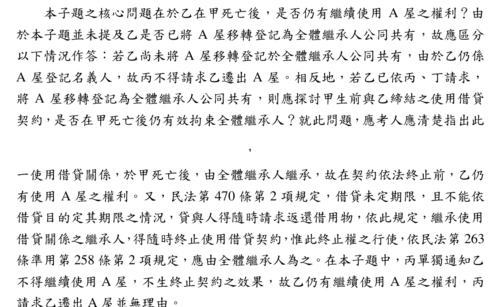
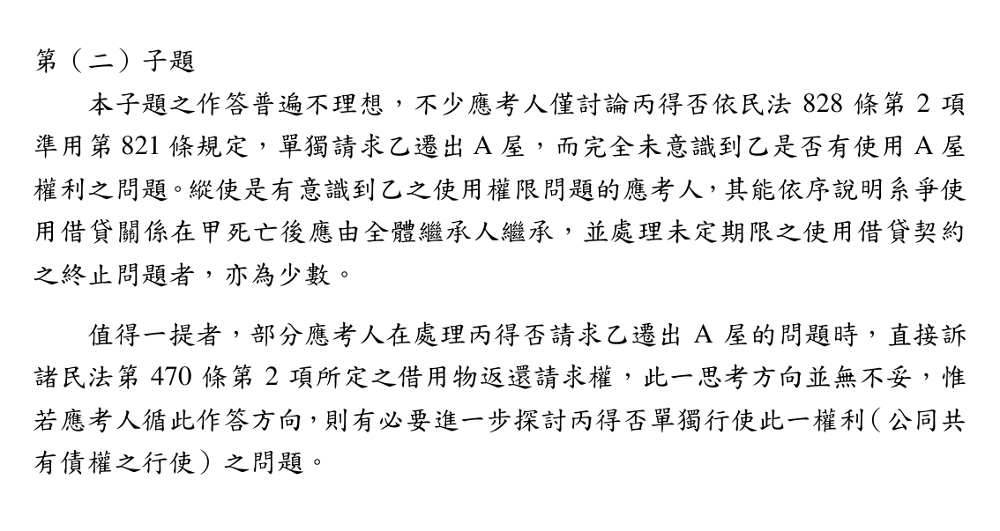

丙一個人，能叫乙搬出去嗎？
111年律師第二試｜民法與民事訴訟法（一）｜第一題第（二）小題（20分）
題目
這一題有四個小題。本頁只做第（二）小題，用得到的事實畫黃色底線。
- （一）丙、丁得否請求乙將A屋登記為乙、丙、丁三人公同共有？（20分）
- （二）丙單獨通知乙不得再繼續使用A屋，並請求乙遷出A屋，是否有理？（20分）本頁只做這一題
- （三）因X大樓住戶戊之過失引發火災，致B屋部分毀損。丙得否單獨向戊請求賠償按其應繼分計算之損害？（20分）
- （四）乙利用其為A屋所有權登記名義人之機會，提供A屋予不知乙僅係A屋出名人之庚設定最高限額新臺幣（下同）480萬元之抵押權，以擔保乙於設定時向庚實際借得之420萬元借款債務。嗣因乙未能清償前開債務，庚遂聲請法院拍賣A屋，並就拍定之價金受償390萬元，其餘30萬元仍未獲清償。之後，乙、丙、丁就甲之遺產完成分割協議，各取得三分之一。如丙、丁就乙前開處分A屋，得依侵權行為規定向乙請求賠償之權利已經時效完成，則丙、丁得否另為如下之請求？（40分）1.乙應給付丙、丁各160萬元 2.乙應給付丙、丁各140萬元 3.乙應給付丙、丁各130萬元
影片說明
影片依序示範：主播介紹、整題讀一遍並框出第（二）小題、兩條繩子、學弟學姊帶出三個問題、尚未移轉登記的情形、使用借貸還在、第263條準用第258條第2項、回到本案、公同共有債權的行使、三個易錯點，最後把擬答從頭看一遍。
人物與兩個約定
| 人 | 身分 | 本小題的角色 |
|---|---|---|
| 甲 | 父親，已死亡 | 生前和乙有兩個約定：借名登記、無償使用 |
| 乙 | 甲之子，出名人、借用人，也是繼承人 | A屋登記在乙名下，被請求遷出 |
| 丙 | 繼承人 | 單獨通知乙不得繼續使用，並請求遷出 |
| 丁 | 繼承人 | 題目沒有寫丁的態度 |
答題順序：三個問題
評分要點說本子題的核心問題，是乙在甲死亡後是否仍有繼續使用A屋的權利。閱卷委員指出，不少考生只討論第828條第2項準用第821條，完全沒有意識到乙的使用權。
先分清楚：請求權基礎與輔助規範
| 條文 | 在本題的角色 |
|---|---|
| 第767條第1項前段 | 丙可能主張的請求權基礎：所有人請求返還無權占有之物 |
| 第470條第2項 | 丙可能主張的請求權基礎：貸與人請求返還借用物 |
| 第828條第2項準用第821條 | 輔助：公同共有人單獨行使所有權請求的規定 |
| 第464條、第1148條第1項 | 抗辯的依據：使用借貸存在，貸與人地位由繼承人承受，乙有權占有 |
| 第263條準用第258條第2項 | 輔助：終止權要怎麼行使 |
| 第831條準用第828條第3項 | 輔助：公同共有債權要怎麼行使 |
互動：一句一句讀懂第263條
擬答只寫一句「依第263條準用第258條第2項，終止應由全體為之」。這一句背後有三個條文。按「看下一句」，一次只看一句。
條文原文依全國法規資料庫現行條文。房東與房客的例子是本頁為了說明所做的假設。假設例子
本題用到的條文
先看要件，再套本案事實。原文中畫底線的部分，就是本題用到的那一句。
民法第464條：使用借貸是什麼（第②問）
稱使用借貸者，謂當事人一方以物交付他方，而約定他方於無償使用後返還其物之契約。
白話把東西免費借人用，用完要還。
例子朋友把腳踏車免費借你騎，騎完要還。
本題甲與乙約定由乙無償使用A屋，成立使用借貸。這個契約不因借名登記契約消滅而當然消滅。
民法第472條（節錄）：貸與人可以終止的事由（第②問）
有左列各款情形之一者，貸與人得終止契約：……四、借用人死亡者。
白話第4款寫的是「借東西的人」死亡，不是「出借的人」死亡。
例子你把車借給朋友，朋友過世了，你可以終止。如果是你過世，這一款就用不上。
本題死亡的是貸與人甲，不是本款的終止事由。
民法第1148條第1項：繼承人承受權利義務（第②問）
繼承人自繼承開始時，除本法另有規定外，承受被繼承人財產上之一切權利、義務。但權利、義務專屬於被繼承人本身者，不在此限。
白話被繼承人留下的權利和義務，由繼承人接手。
例子爸爸生前把車借給別人，爸爸過世後，繼承人接手出借人的位置。
本題貸與人的地位由乙、丙、丁承受，契約終止前，乙是有權占有。
民法第470條第2項：未定期限的借貸（第③問）
借貸未定期限，亦不能依借貸之目的而定其期限者，貸與人得隨時請求返還借用物。
白話沒說借多久，也看不出要用到什麼時候，出借的人隨時可以要回來。
例子朋友把空房借你用，沒說期限，也沒說用途，朋友可以隨時要回。
本題題目寫「未約定使用之期限及目的」。評分要點認為，繼承使用借貸關係的繼承人，依此規定得隨時終止使用借貸契約。
第767條、第821條、第828條、第831條（點開看）
民法第767條第1項前段
所有人對於無權占有或侵奪其所有物者，得請求返還之。
民法第821條
各共有人對於第三人，得就共有物之全部為本於所有權之請求。但回復共有物之請求，僅得為共有人全體之利益為之。
民法第828條第2項、第3項
第八百二十條、第八百二十一條及第八百二十六條之一規定，於公同共有準用之。
公同共有物之處分及其他之權利行使，除法律另有規定外，應得公同共有人全體之同意。
民法第831條
本節規定，於所有權以外之財產權，由數人共有或公同共有者準用之。
以上條文均依全國法規資料庫現行條文核對（2026-11-19）。
比較：三種行使方式，不要混在一起
| 丙想做的事 | 依據 | 誰可以做 | 本題結果 |
|---|---|---|---|
| 本於所有權請求遷出 | 第767條第1項前段、第828條第2項準用第821條 | 公同共有人 | 移轉前丙還不是公同共有人；移轉後，契約終止前乙有權占有 |
| 終止使用借貸 | 第263條準用第258條第2項 | 評分要點：全體繼承人 | ✕ 丙單獨通知不生終止效力 |
| 請求返還借用物 | 第470條第2項、第831條準用第828條第3項 | 債務人以外的公同共有人全體，或得其同意（112台上1587） | ✕ 丙單獨請求無理由 |
答題地圖
考選部評分要點與閱卷委員的話

閱卷委員的話：
- 作答普遍不理想，不少考生只討論第828條第2項準用第821條，完全沒有意識到乙是否有使用A屋的權利。
- 能依序說明使用借貸由全體繼承人繼承，並處理未定期限使用借貸終止問題的考生，也是少數。
- 直接主張第470條第2項借用物返還請求權，思考方向並無不妥，但要進一步討論丙能否單獨行使（公同共有債權的行使）。

來源：考選部〈111年司法官、律師考試第二試法律專業科目評分要點與閱卷委員的話〉民法與民事訴訟法（一）第1、2、4頁，已轉成圖片逐頁核對。
實務見解
最高法院104年度第3次民事庭會議決議（104.02.03）
公同共有債權人起訴請求債務人履行債務，係公同共有債權之權利行使，非屬回復公同共有債權之請求，尚無民法第八百二十一條規定之準用；而應依同法第八百三十一條準用第八百二十八條第三項規定，除法律另有規定外，須得其他公同共有人全體之同意，或由公同共有人全體為原告，其當事人之適格始無欠缺。
本題評分要點在第（三）子題引用這則決議。本小題依第470條第2項請求返還時，同樣是行使公同共有債權。
最高法院112年度台上字第1587號民事判決（112.08.31）
查上訴人係依繼承及買賣之法律關係，請求被上訴人向全體繼承人給付買賣價金，自係行使公同共有債權，依上說明，應由公同共有人全體(不含相對立之被上訴人)或經其他公同共有人全體之同意起訴，當事人始為適格。
本題債務人也是繼承人時，全體不包含相對立的債務人。所以擬答寫「債務人乙以外之公同共有人全體」。
歷審本判決廢棄原判決、發回臺灣高等法院；更審（113年度上更一字第17號）於113年8月5日調解成立，沒有實體判決。
擬答
丙之請求無理由。
一、尚未移轉登記時
借名登記契約因甲死亡消滅後，全體繼承人對乙僅有移轉登記之債權請求權。A屋仍登記於乙名下，丙尚非公同共有人，無從依第767條第1項前段、第828條第2項準用第821條請求遷出。
二、假設A屋已移轉登記
（一）甲乙約定乙無償使用A屋，成立使用借貸（第464條），不因借名登記契約消滅而當然消滅。貸與人死亡非終止事由（第472條第4款僅列借用人死亡），貸與人地位由繼承人承受（第1148條第1項）。契約終止前，乙係有權占有。
（二）本件未定期限及目的，貸與人得依第470條第2項隨時請求返還，即得隨時終止。惟依第263條準用第258條第2項，終止應由全體為之，丙單獨通知不生效力，乙仍有權使用A屋。
（三）縱逕依第470條第2項請求返還，此屬公同共有債權之行使，無第821條之準用，應依第831條準用第828條第3項，由債務人乙以外之公同共有人全體為之或得其同意（最高法院104年度第3次民事庭會議決議、112台上1587）。丙單獨請求，亦無理由。
擬答434字（含標題、標點與數字，不含空白，以程式計算）。20分題目參考上限429字（120分鐘×20/150＝16分鐘，扣讀題3分鐘，13分鐘×每分鐘約33字）；略超幾個字可接受。
互動：換一個情形，結論會怎樣？
本題的關鍵是「移轉登記了沒」與「丙是不是一個人」。先自己想想，再點。
第三個分頁是本頁為了對照112台上1587所做的假設與推論，不是考選部評分要點的內容。本頁推論
學說補充
尚未加入指定學說文獻。乙同時是借用人與繼承人時，終止權應如何行使，評分要點未另外討論，本頁不另下結論。
預想易錯點
①～③依閱卷委員的話整理。
| 可能的錯誤 | 應該怎麼寫 |
|---|---|
| ① 只寫第828條第2項準用第821條 | 先問乙有沒有使用A屋的權利。 |
| ② 沒說使用借貸由繼承人繼承，也沒處理終止 | 依序寫：使用借貸存在、繼承人承受、未定期限得隨時終止、終止應由全體為之。 |
| ③ 直接用第470條第2項，沒討論丙能否單獨行使 | 補上公同共有債權的行使：第831條準用第828條第3項。 |
| 把「已移轉登記」寫成題目事實 | 題目寫A屋仍登記於乙名下，已移轉登記只能標明是假設。 |
延伸思考
參考資料
歡迎指正
相關連結
民法講義總覽 上一題：111年第一題（一）借名登記與繼承 下一題：111年第一題（三）公同共有債權的行使 GitHub 原始檔